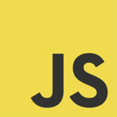
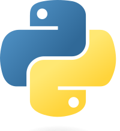

Hola, soy Elias
Analista programador
Con experiencia en desarrollo web y aplicaciones de escritorio, con pasión por crear soluciones tecnológicas innovadoras y eficientes.
Conocimientos
Frontend
- 


Backend

- 


Bases de Datos


DevOps y Herramientas


Formación Académica
Universidad Tecnológica del Perú
Ingeniería de sistemas e informática
(Agosto 2020 - Actualidad)ICPNA Piura
Inglés Americano Avanzado
(2017 - 2020)Escuela Tecnológica Superior de la Universidad Nacional de Piura
Técnico en Análisis de Sistemas
(2008 – 2012)Proyectos

Experiencia Profesional
- Desarrollé un ERP con facturación electrónica en C# y SQL Server
- Implementé una plataforma de triaje COVID en PHP y MySQL
- Desarrollé una app móvil en Kotlin con API RESTful en .NET 8 y JWT
- Digitalicé historiales clínicos de pacientes
- Instalé y configuré redes, servidores y sistemas de seguridad.
- Desarrollé una página web corporativa con HTML, CSS, JS y PHP.
- Desarrollé un sistema de cobros en C# y MySQL.
- Desarrollé un ERP con facturación electrónica en C# y MySQL
- Instalé un servidor Ubuntu y configuré red de datos.
Sobre mí
Soy profesional técnico en análisis de sistemas y estudiante de ingeniería de sistemas e informatica en el 10° ciclo, con experiencia en el desarrollo e implementación de sistemas empresariales tanto de escritorio como web. Además, tengo habilidades en el diseño y administración de infraestructuras tecnológicas, incluyendo la instalación y mantenimiento de redes y sistemas de vigilancia.
He liderado la implementación de sistemas integrales de gestión de pedidos, ventas, almacén y facturación electrónica, mejorando significativamente la eficiencia operativa de las empresas.
Poseo competencias en la instalación y mantenimiento de redes, hardware, software, y en la coordinación de equipos para la ejecución de proyectos tecnológicos.